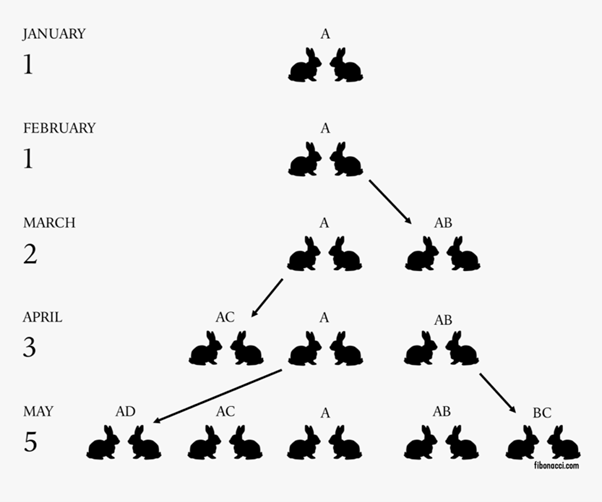
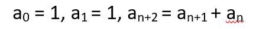

Fibonaccijeva stevila
Z opazovanjem narave je Fibonacci prišel do matematičnega zaporedja – zaporedje je poimenovano po njem - Fibonaccijevo zaporedje. Podatki iz literature pa pričajo, da naj bi to zaporedje pred Fibonaccijevim rojstvom poznali že Indijski poeti. Fibonacci je opazoval razmnoževanje kuncev, ker ga je zanimalo, kako hitro bi se razmnoževali v idealnih okoliščinah. Za idealne okoliščine je vzel par (samca in samico), kateremu se je rodil vsak mesec še en par (en mesec je potreben za za kunce da odrastejo in se lahko parijo). V idealnih razmerah ti zajci ne bi nikoli umrli.

Če preštejemo vse pare dobimo Fibonaccijevo zaporedje: 1, 1, 2, 5, 8, 13, 21, 34, 55, 89, … Torej če povzamemo je Fibonaccijevo zaporedje zaporedje v katerem je vsak naslednji člen enak vsoti prejšnjih dveh členov.
Uporaba fibonaccijevega zaporedja

Razmnoževanje kuncev se ne ujema z biološkimi dejstvi, a razmnoževanje čebel oz. trotov se. Trot nima dveh staršev, saj se razvije iz neoplojenega jajčeca. Torej je njegov prednik le matica. Vsaka matica pa ima dva starša. Torej število prednikov trota ne raste eksponentno, ampak kot Fibonaccijevo zaporedje kot prikazuje slika.
Pretvarjanje milj v kilometre, npr. če bi radi izvedeli koliko so 3 milje v kilometrih, si lahko pomagamo s Fibonaccijevim zaporedjem. Pogledamo tretji člen Fibonaccijevega zaporedja. To lahko storimo, zato ker je pretvorbeni količnik približno enak zlatemu številu.
Rast listov na nekaterih rastlinah – listi na nekaterih rastlinah rastejo v obliki vijačnice. Narava poskrbi za pravilna razmerja med listi, tako da se ne prekrivajo, tako rastlina izkoristi največ svetlobe. Razmerje med listi pa je ravno Fibonaccijevo zaporedje.

Primer Fibonaccijevih stevil
| 0 | 1 | 1 |
| 2 | 3 | 5 |
| 8 | 13 | 21 |
| 34 | 55 | 89 |
| 144 | 233 | 377 |